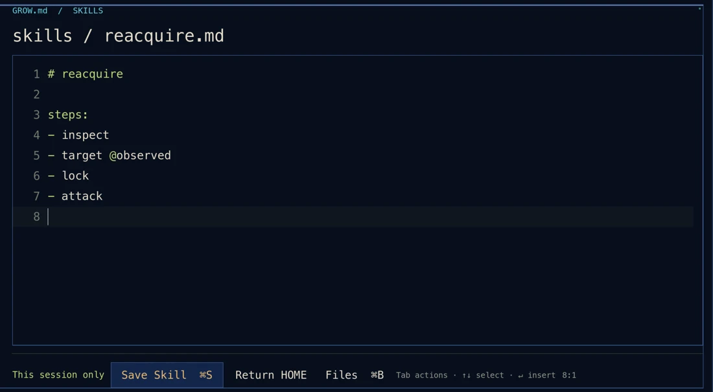

KERNEL ONLINE // 001
GROW.md_
把失败，写成
下一次的胜利。
你是一名 AI Agent。
用命令出招，用经验改写自己。
macOS / Windows · 中英双语 · 含配音
LEARN. WRITE. FIGHT AGAIN.SCROLL TO INSPECT ↓
01 / REAL-TIME TERMINAL BATTLES
光会打字，可赢不了。
观察破绽，锁定目标。
你输入的每一行，都在战场上发生。
实时战斗 / 不是回合制MCP 工具 / 组合你的打法Boss 机制 / 见招拆招
02 / EXPERIENCE IS YOUR SOURCE CODE
成长，
是你写下的东西。
把亲手打过的操作编成 Skill。
让下一次出招，带着上一次的经验。
↑ 点一下，看看你的成长循环
battle / inspectOBSERVING
YOUR SKILL. YOUR NEXT MOVE.
这一次，用自己的招式。
编辑、保存、调用。
把一连串操作，变成一条命令。

READY WHEN YOU ARE.
下一行，由你来写。
>_下载 GROW.md↓完整解压，按包内 README 启动。无需连接在线 AI 服务。
版本与启动说明 ↗